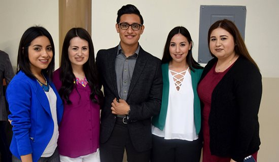
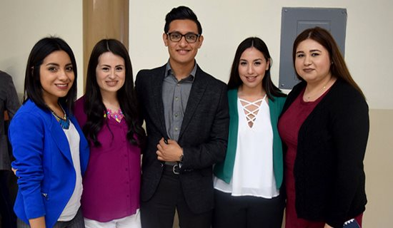

Misión


 

Formar ciudadanos profesionales con calidad, íntegros, innovadores y emprendedores, con capacidad crítica, resolutiva, conocimiento actualizado y responsabilidad social, que brinden soluciones creativas en beneficio de una comunidad transfronteriza en un campus intercultural y que contribuyan al avance de la ciencia, la ingeniería, las artes y humanidades, para generar, aplicar y difundir el conocimiento, con amplia cobertura y oferta diversificada, proyección internacional, que permite potencializar su posición geográfica y estratégica y elevar nivel de bienestar de la población de la zona metropolitana Tijuana, Tecate, Rosarito y Valle de las Palmas.